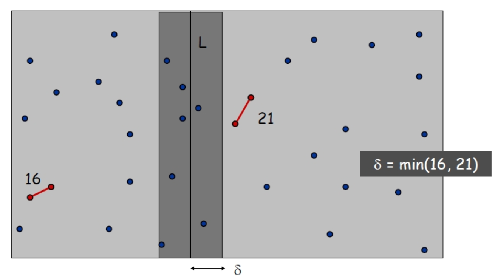
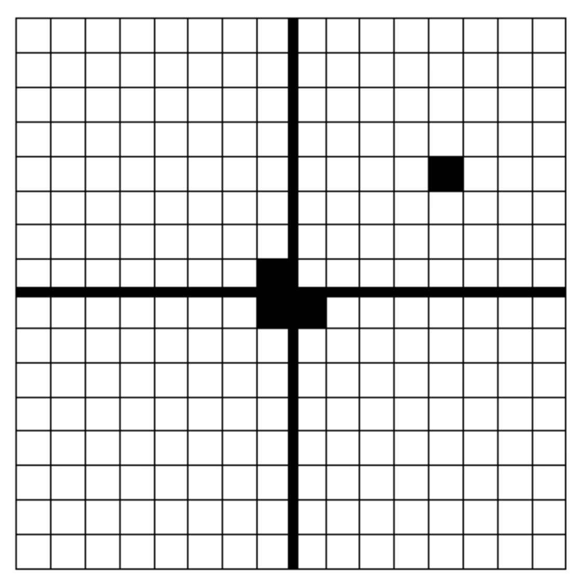

assignment #3
RecursiveInsertionSort(A, n)
if n ≤ 1 then
return
RecursiveInsertionSort(A, n-1)
key ← A[n]
j ← n-1
while j ≥ 0 and A[j] > key do
A[j+1] ← A[j]
j ← j-1
A[j+1] ← key
end function
The recurrence relation is:
\(T(n) = T(n-1) + O(n)\)
Element at the 7th position (both acceptable):
Recurrence:
\(T(n) = 3T(n/3) + O(n)\)
Solution:
\(O(n \log_3 n)\)
Merge costs: 2n, 3n, 4n, …, kn
Total time:
\(\sum_{i=2}^k in = O(k^2 n)\)
The merge operations form a tree.
At each level, cost is O(kn).
Number of levels: \(O(\log_2 k)\).
Total complexity:
\(O(kn \log k)\)
Strategy: Divide and Conquer

ClosestPair(P)
divide P into left and right (half the set)
δ1 ← ClosestPair(left)
δ2 ← ClosestPair(right)
δ ← min(δ1, δ2)
filter points within δ of dividing line
sort by y-coordinate
compare distances in strip (update δ)
return min distance δ
end function
Recursive Idea:

Induction:
Recurrence:
\(T(n) = 4T(n/2) + \Theta(1)\)
Solution:
\(T(n) = \Theta(n^2)\)
Triominos(p, q, x, y, b)
if b = 0 then return []
define center coordinates
place tromino covering 3 central cells
recurse on 4 quadrants with missing cells
return placements
end function
Triominos(p, q, x, y, b)
Input: (p, q) are the coordinates of the top-left corner of the square being covered by this
call,
(x, y) is a cell already covered, and b is the log of the size of the square.
Output: List of triomino placements.
if b = 0 then return (empty list) ▷ Base case: A 1x1 grid with the cell already covered
▷ Divide Section: Define the coordinates for recursive calls.
▷ There are eight variables denoting the coordinates of the squares in the recursive calls.
▷ B = bottom, T = top, L = left, R = right.
(BLx, BLy)← (p+ 2b−1 − 1, q + 2b−1)
(TLx, TLy)← (p+ 2b−1 − 1, q + 2b−1 − 1)
(BRx, BRy)← (p+ 2b−1, q + 2b−1)
(TRx, TRy)← (p+ 2b−1, q + 2b−1 − 1)
▷ Override coordinates based on the location of (x, y).
if x < p+ 2b−1 and y ≥ q + 2b−1 then
(BLx, BLy)← (x, y)
currentTriomino ← ((TRx, TRy),BLdirection)
else if x < p+ 2b−1 and y < q + 2b−1 then
(TLx, TLy)← (x, y)
currentTriomino ← ((BRx, BRy),TLdirection)
else if x ≥ p+ 2b−1 and y ≥ q + 2b−1 then
(BRx, BRy)← (x, y)
currentTriomino ← ((TLx, TLy),BRdirection)
else if x ≥ p+ 2b−1 and y < q + 2b−1 then
(TRx, TRy)← (x, y)
currentTriomino ← ((BLx, BLy),TRdirection)
end if
▷ Make four recursive calls and concatenate the results.
return [currentTriomino]
∥Triominos(p, q + 2b−1, BLx, BLy, b− 1)
∥Triominos(p, q, TLx, TLy, b− 1)
∥Triominos(p+ 2b−1, q + 2b−1, BRx, BRy, b− 1)
∥Triominos(p+ 2b−1, q, TRx, TRy, b− 1)
▷ where ∥ is list concatenation.